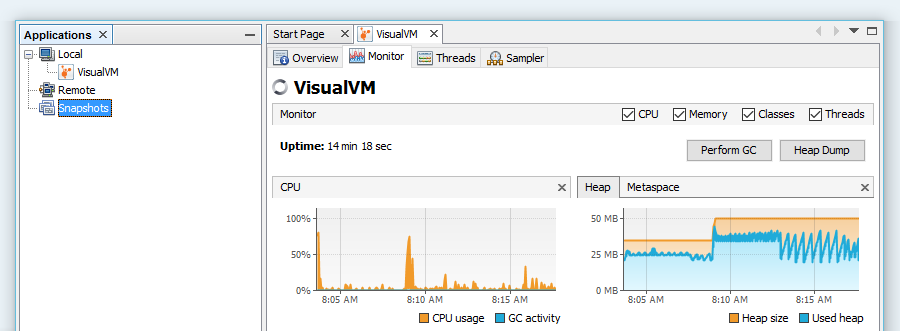

<div class="home">
    
    <center id="logo_big">
        
    </center>
    
    <center id="visualvm_caption">
        <h2 class="noborders">All-in-One Java Troubleshooting Tool</h2>
    </center>
    
    <center id="visualvm_description">
        VisualVM is a visual tool integrating commandline JDK tools and lightweight profiling capabilities.<br/>
        Designed for both development and production time use.
    </center>
    
    <center id="visualvm_download">
        <a class="downloadb" href="#">Download 1.3.9</a>
    </center>
    
    <center id="visualvm_other_downloads">
        <a href="#">IDE Integrations</a> | 
        <a href="#">Plugins</a> | 
        <a href="#">Previous Versions</a>
    </center>
    
    <center id="visualvm_screenshot">
        
    </center>
    
    <center id="visualvm_news">
        <table>
            <tr>
                <td>
                    <h2>News:</h2>
                    {% assign allnews = (site.pages | where: "layout" , "visualvm_news_layout" | reverse) %}
                    {% for news in allnews limit:3 %}
                        <div class="newsline">
                            <p class="newsline_caption">
                                <b><span class="newsdate">{{ news.date | date: '%B %d, %Y' }}: </span>{{ news.title }}</b>
                            </p>
                            <p class="newsline_content">
                                {{ news.content }}
                            </p>
                        </div>
                    {% endfor %}
                </td>
                <td>
                    <h2>Twitter:</h2>
                    <a class="twitter-timeline" data-chrome="noheader nofooter noborders transparent" data-tweet-limit="3" href="https://twitter.com/visualvm"></a> <script async src="//platform.twitter.com/widgets.js" charset="utf-8"></script>
                </td>
            </tr>
        </table>
    </center>

</div>
